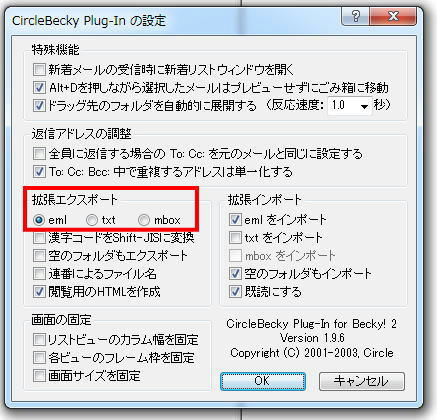
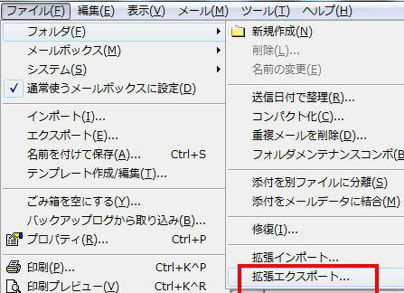

Becky2 から Thunderbird への移行手続き
POP3 で運用されているサーバでは過去のメールメッセージデータが移行されません。 IMAP4 運用サーバに切り替えられるまでは以下手順で対応します。
- Becky2: https://www.rimarts.co.jp/becky-j.htm
- Thunderbird: https://www.thunderbird.net/ja/
手順
基本的に新しいPCに移し替えるという流れになるので、移行先は外付けストレージ、ネットワーク共有（NAS)をおすすめします。
- CircleBecky というプラグインをインストール手順があります。
必要なもの： 同上プラグイン、エクスポート先フォルダ（物理的に余裕があるもの）
- 長年使っているPCでBeckyを動かしていて、HDD容量が心もとない場合は、エクスポート先フォルダをUSB接続のストレージ、NASなどに準備しておきましょう。
- Becky!プラグイン http://www.vector.co.jp/soft/dl/win95/net/se252604.html をインストールします。
- ツール→プラグインの設定→"CircleBecky Plug-in" でインストール/確認

- ファイル → フォルダ → 拡張エクスポート → エクスポート先のフォルダを選んでOK。

- 移行先PCに Thunderbirdをインストール、POP3アカウント設定までは進めておきます。
- Thuderbird を起動 「ツール」→「アドオン」を開きます。
- アドオン MBoxImport をインストールします。
- 移行先PCで「エクスポート先のフォルダ」が参照できるようにしておきます。
- Thuderbird に 「エクスポート先のフォルダ」からメールメッセージをインポートします。
- a) 受信トレイを選択します。
- b) 右クリック → 「インポート・エクスポート」→「ファイルから全てのemlファイルをインポート」→「サブフォルダを含む」
以上です。
備考
- Thunderbird は 寄付によって維持されています。
- 私(strnh)も微力ながら寄付しています。
- このプロジェクトの存続を望むのであれば、彼らに寄付しましょう。 https://www.thunderbird.net/ja/donate/